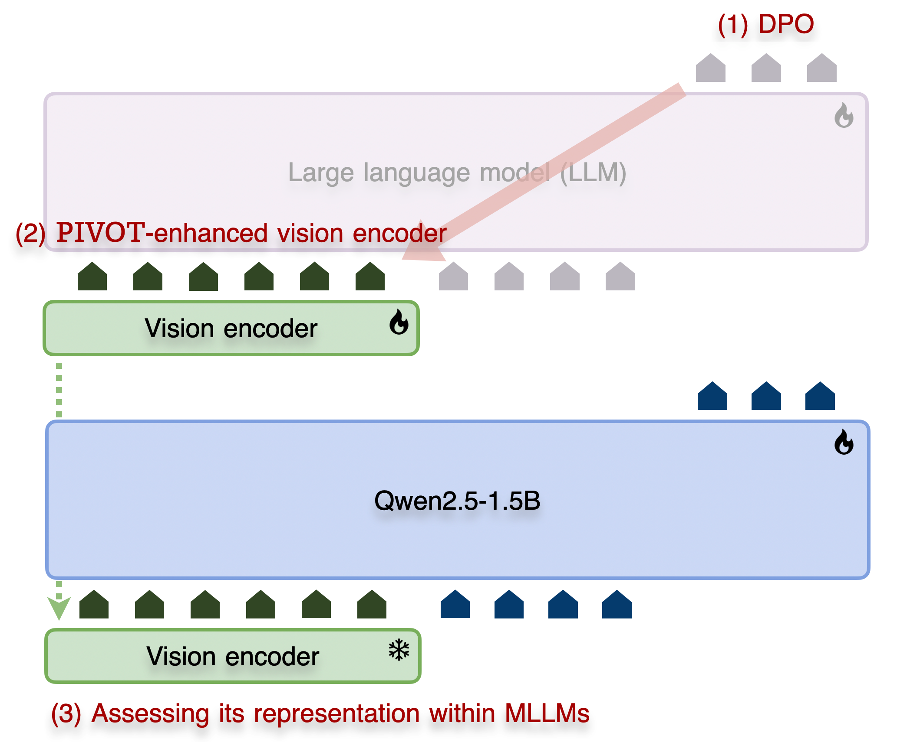

1
1
 2
2
TL;DR
Does the MLLM training method, like SFT versus RL, actually have an impact on the vision encoder's representations?
Yes—and the training recipe matters! Our research shows that training with RL (e.g., DPO) produces stronger, more precisely localized visual representations than SFT. This translates to superior performance not only on MLLM benchmarks (especially strongly vision-related VQA tasks) but also on classic vision tasks like ImageNet classification and segmentation. If your goal is to improve the vision encoder itself for MLLM development, RL is the more effective path.

Research Motivation
- The dominant MLLM research paradigm has focused primarily on the LLM backbone or the MLLM itself, leaving the vision encoder under-analyzed.
- This oversight impedes a deeper understanding of how modern MLLM training strategies, such as Supervised Finetuning (SFT) and Reinforcement Learning (RL), impact the model.
How do SFT and RL affect MLLMs?
The impact of MLLM training strategies is first investigated using common VQA benchmarks. This contrasts with previous SFT versus RL studies, which performed comparisons in specialized environments like card games or robot action planning. Our analysis aims to answer: How do SFT and DPO affect MLLM on diverse VQA tasks? Is DPO actually superior to SFT? Does this trend hold with model scaling?
Findings:
- The performance improves with the size of the vision encoder, underscoring the importance of the visual representation capacity within MLLMs even though the LM size is also a critical factor.
- DPO achieves superior performance compared to SFT, particularly on strongly vision-related tasks, motivating an in-depth analysis of how these learning strategies impact the visual representation in MLLMs.
How does MLLM training affect visual representations?
Now, the focus shifts to an in-depth analysis of the vision encoder within MLLMs. As illustrated in our experimental setup , this is achieved by isolating the encoder and evaluating its standalone performance on classic vision tasks.
Does MLLM training really reshape visual representations?
After MLLM training with either SFT or DPO, the vision encoder is detached and its standalone performance evaluated via linear probing.
Yes, it does. In particular, DPO creates better visual representations for ImageNet classification than SFT. This novel finding shows that the prevalent DPO method (common in the LLM community) is also effective for enhancing visual representations.
Interestingly, MLLM training with larger LLMs yields a high-performing vision encoder, suggesting they provide a more informative optimization signal.
Do DPO and SFT provide distinct gradient signals to the vision encoder?
Yes, and DPO provides a more fine-grained signal.
Our experiment visualizes gradients from different MLLM training strategies on the vision encoder using Grad-Cam. The results indicate that DPO yields more focused gradients on question-relevant visual features, while the SFT signal is more dispersed.
More results can be found here .
Using Grad-CAM, the gradient signals corresponding to the vision encoder features during MLLM training are visualized.
Do these distinct gradient signals translate to differences in the vision encoder's localization capabilities?
Segmentation performance is evaluated via MLP probing on vision encoders trained with a Qwen2.5-1.5B LLM head.
Vision encoders trained with DPO and SFT show distinct localization behaviors. Notably, DPO-tuned encoders produce segmentation maps that align more closely with the ground truth.
Here are more qualitative results.
Results from segmentation probing on the CLIP-L/14 336px encoder, which was trained with SFT and DPO within MLLMs, are visualized.
What is the impact of MLLM training on vision & language alignment?
We compute vision–language alignment motivated by the Platonic Representational Hypothesis. The results show that DPO-trained vision encoders achieve stronger alignment scores compared to those trained with SFT.
Moreover, pairing with a larger LLM consistently leads to higher alignment scores, supporting our hypothesis that larger LLMs provide more useful training signals to the vision encoder.
Platonic representational alignment is measured between reference LLMs and the vision encoders of MLLMs trained with Qwen2.5 models (Y-axis: size of the Qwen2.5 model).
Findings:
- MLLM training not only adapts the language model but also reshapes the visual representations.
- DPO steers the vision encoder toward a more fine-grained analysis of visual information, improving its object localization capabilities.
- The vision encoder benefits from a larger LLM, which provides more informative backward signals for visual representation within an MLLM.
What’s next: Unlocking vision model potential via RL
Building on our finding that DPO benefits visual representation learning in MLLMs, we reframe this process as a simple recipe for evolving vision models for MLLMs—Preference-Instructed Vision Optimization (PIVOT). Here, we assess the effectiveness of PIVOT-enhanced representations within MLLMs, following prior evaluation protocols  such as Cambrian and Web-SSL. It should be noted that PIVOT is not proposed as a new method, but rather as an underexplored training regime that enables the development of better MLLMs than those using the original vision encoders.
The results reveal a remarkable impact of PIVOT when the enhanced encoders are used within MLLMs; a vision model trained with PIVOT not only outperforms its original counterpart but also surpasses a substantially larger model (e.g., SigLIP2-So/16+PIVOT > SigLIP2-g/16) and even a subsequent-generation encoder (e.g., SigLIP1-So/14+PIVOT > SigLIP2-So/16).
Notably, this enhancement is achieved with just 18 hours of training on 8 H100 GPUs. This amounts to fewer than 1% of GPUs of standard vision pre-training, with SigLIP2 trained on up to 2K TPUv5e chips.
When comparing vision encoders trained with different strategies within MLLMs, we find that a vision encoder enhanced with PIVOT provides a greater advantage over one trained with SFT in MLLM applications.
Finding:
- Existing vision models possess substantial potential for improvement within MLLMs, which can be unlocked by PIVOT.
Citation
@article{song2025rlseebetter,
title = {RL makes MLLMs see better than SFT},
author = {Junha Song and Sangdoo Yun and Dongyoon Han and Jaegul Choo and Byeongho Heo},
journal = {arXiv preprint arXiv:2510.16333},
year = {2025}
}Correspondence
Please reach out to Junha Song with any questions.
sb020518@kaist.ac.kr
Acknowledgements
Special thanks to the NAVER AI teams for their generous support.
This project page was developed with reference to the awesome project Web-SSL. We sincerely appreciate the creators for their inspiring work.